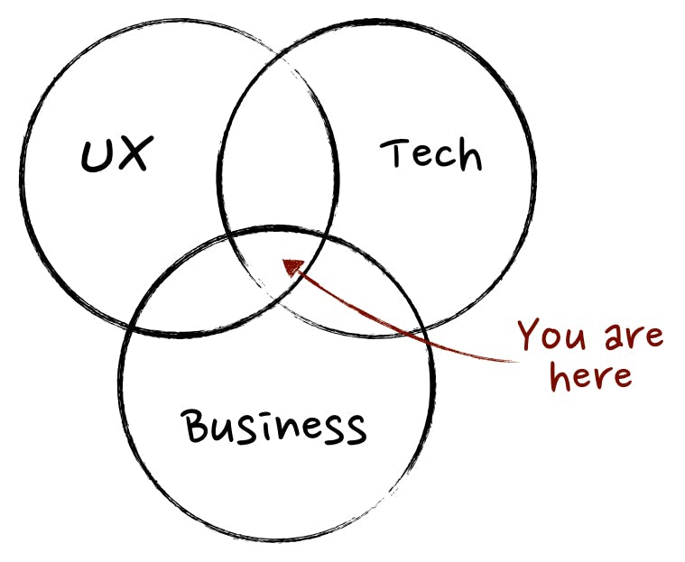

This post include:
- Resources I used to get started in Product Management
- Some very basic concepts about PMs and what they do.
*Photo by Natalie Scott on Unsplash
After my third year at Babson college, I decided to take a gap year, which is quite an unpopular move. Not gonna go on a rant about this process of self-debating but in short, one of the reasons why I decided to take a year off is because I want to further explore what I want to do in my career path after graduation. Imagine doing something for 8 hours per day that I might end up not liking kind of scares me. That’s why I chose to back off a little bit.Who Can Become A PM?
Honestly anyone from any background can enter product management, as long as you understand how to cultivate a product mindset.For me, I have background in business analytics and technology management. The summer of my junior year, I spent 3 months working in Fidelity Investment in Boston, where I was so fortunate to work in different projects from business analytics to something more technical like building an automation tool.
Much as I like telling stories out of provided data, I soon realized that I enjoyed working on the strategic side while the preprocessing seriously gave me headache. I also realized that I want to do something closer to end users, something that would give me the chance to interact as much as possible with different stakeholders in a business.
Right now I’m working as Associate Product Manager Intern for GroveHR, a HRIS product developed by KMS Technology, a US-based outsourcing company with development and testing center in Vietnam. I have learned so much over here about Product Management and REALLY recommend my folks in Vietnam who are interested in becoming a PM to join the team here (disclaimer 2: this is not a recruitment post).
I’m by no means an expert in PM and have so many things to learn, but I figure there are other people looking into Product Management out there but don’t know where to start. This post is a quick recap of some of the very basic concepts+ what resources I used to get started.
BIG NOTE 1: Talk to Product managers in different companies. Their responsibilities might be different but sometimes you’ll find them facing the same problems at work and it’s interesting to see how each tackles those in a different way
A classic but nerve-breaking question: What do PMs do and who are they?
This is a photo of a very two clueless cows. Exactly same expression from me whenever I asked my friends, who are PMs, about what they do.
*Photo by Maria Teneva on Unsplash
The responsibilities of a PM vary, depending on what kind of product you are building or what stage your product is at within its life cycle. Product development is often practiced with agile methodology, which is a practice that focuses on building a product through multiple iterations based on user feedback.
There are 3 types of PMs:
- PM who builds internal products
- PM who builds B2B products
- PM who builds B2C products
Simply put, internal products are those used by some teams in your company or the entire organization, while external products are for users not within your organization. This can be a Business to Business (B2B) or Business to Consumers (B2C) product.
Since the product I’ve been working with falls into the latter category, I’m gonna just talk about the second type of PM.
What do they do everyday?
From a high level, a PMs works /coordinates with different stakeholders (eg designers, engineers, sales, marketing, etc) to make sure the product is delivered in the right state, with the right requirements, solving the right needs of our users.
Let’s talk about the very basic workflow of a PM.
For example, when I build a feature for our product, this is how the flow looks like:
I started with researching. This is where a combination of your own common sense, user experience design, and competitive research kicks in. Market research, competitive research, UX research,.. all serve the same purpose which is helping you to define the requirements for the feature that you’re building. After I define the requirements for that feature, I’d start building a user flow, which helps me to break down how many activities that the users are gonna be able to perform with my feature. Now that I am able to get the concept of how my feature works, I’m gonna construct a wireframe which is a UI mock up that transfers your product concept into something well, visually nicer. Normally I use Balsamiq or Sketch to do the wireframes.It’s time to get roasted by designers.
Yes, so after I have my wireframes that kind of shows how I want this baby to look in reality, I’ll come discuss with designers and they will give you feedback. It’s not like they will judge how pretty your UI looks because apparently they know more about design and me. Rather, they’ll give you feedback in the area of User experience eg.if this button should be put here and not there, if a scroll bar is needed, etc. So make sure you know what you are talking about and do your research before you transfer your wireframes to designers.
If everything’s good with the mockup, then designers will take your mockup and start doing some magic so the baby looks better. It’s time to write user story!
Think about it like this: now that you know how you want your feature is gonna look, so who is gonna help you build it? That’s right, it's our engineers :)
With that being said, a user story is a user case in which you carefully craft a scenario from your user (whoever uses this feature) ‘s perspective.
A common “template” to follow is:
As a [who your user is], I want to [their need], so that [the result].
For example, if I built a feature that helps our users view a new announcement of the company, I’d write something like:
As an employee of the company, I want to view the list of news when I login the app, so that I will be aware whenever a new change or announcement is made.In a user story, you need to define the acceptance criteria with 100% clarification so that engineers and quality assurance (QA) folks are gonna be able to build and test if it works as wanted.
Yes, so that a very basic flow!Of course you also have to work with marketing, sales team, and other people within your company as well to make sure anything related to bringing the product to your end users is properly executed.
As a product manager, you also take responsibility for your product’s vision. You’ll need to build a roadmap for your product that satisfies the business goals in different stage, or establish a way to measure your product success.
And the list goes on, but that’s basically the main concept.
BIG NOTE: A product manager does not manage ANYONE but rather manages the product itself.
So what’s the most important skill?
When asking people with certain work experiences in Product Management field, a very common answer I got from them is that anyone from any background can break into this field. However I personally believe an excellent product manager possess a combined knowledge of these 3 fields:
- Business, which has a lot to do with product strategy in overall
- User Experience (UX) Design (because PMs need to understand users, duh)
- Technology (because PMs need to coordinate with engineers, communicate with them and understand what is technologically feasible and what’s not).
As for soft skills, the most 3 important ones for me will be:
- Empathetic to your users: always ask WHY, HOW, WHAT because that’s the core of building any product. One can easily get lost in details and forget the whole big picture of why we are building this product and how it’s gonna benefit our users.
- Prioritization & critical thinking: understand what features or functionalities that of greater importance and therefore should be included in our MVP, instead of investing all time, money, and human resources all at once to build a product that might not really solve the pain points of users.
- Research: understand the landscape and our competitors so as to know where to position our product.(Okay I think there are 4 actually) The ability to construct user mapping story and user journey so as to develop an understanding for your product and most importantly, help other team members to get the big picture
Resources:
I find User Mapping Stories, The Lean Startup and Don't make me think are some useful books to cultivate a Product mindset and gain basic understanding on UX principles.Courses: I really recommend “Become a product manager, learn the skills and get the jobs” in Udemy. This is a great overview course that covers every basic thing you need to know about Product Management
For UX Design I follow https://uxplanet.org/, https://uxdesign.cc/, https://uxdesign.cc/@will.lawrence
Well..
This is a very short recap that I tried my best to provide to those new to Product Management like me 5 months ago. There are soooo many different lessons and insights along the way that I hopefully can share in another post. If you are also passionate about Product Management, I’d love to learn from you as well!